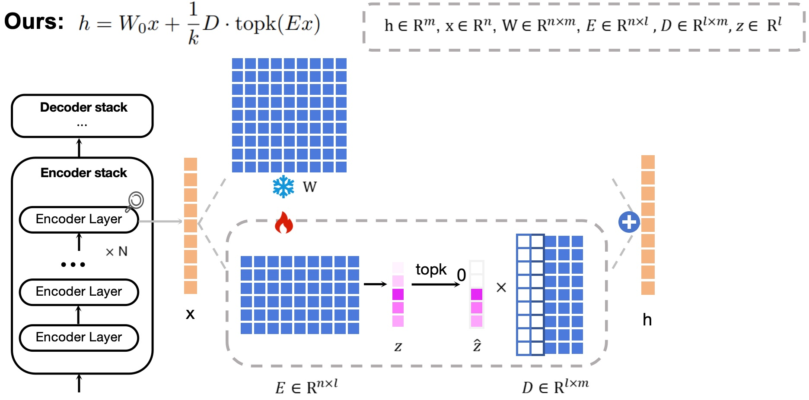

⚡ STAN: Sparse adapTAtioN (SAE-based PEFT)
Overview
STAN (Sparse adapTAtioN) is a parameter-efficient fine-tuning method that replaces the rigid low-rank constraint (e.g., LoRA) with input-dependent sparse feature selection in a high-dimensional latent space. The key idea is to learn task-specific adaptations via sparse activations inside Sparse Autoencoder (SAE) modules, enabling both stronger expressivity and improved interpretability.
Instead of compressing updates into a fixed low-rank subspace, sparse adaptation identifies and selectively activates a small subset of high-dimensional features, supporting a more decomposed and dynamic fine-tuning process.
Architecture

Core Formulation
Similar to LoRA, STAN adds an adaptation term to a frozen pretrained projection. Different from LoRA, STAN computes the adaptation through an encoder–TopK sparsifier–decoder pipeline:
Intuition: topk acts as a dynamic router that selects the most relevant latent features per input,
yielding an input-dependent mixture of subspaces rather than a single fixed low-rank subspace.
Highlights
- Conceptually distinct PEFT: sparse adaptation via SAEs rather than low-rank decomposition.
- Dynamic & flexible updates: TopK-driven input-dependent feature selection.
- Interpretable representations: sparse and more semantically decomposed latent features.
- Broad validation: language understanding, math & code, vision-language, and diffusion-based generation.
Key Results (Selected)
GLUE (5 tasks, 4 backbones)
| Backbone | Method | MNLI | SST-2 | QNLI | QQP | CoLA |
|---|---|---|---|---|---|---|
| RoBERTa-base | STAN | 0.9303 | 0.9495 | 0.9408 | 0.9242 | 0.6191 |
| RoBERTa-large | STAN | 0.8919 | 0.9610 | 0.9489 | 0.8957 | 0.7400 |
| DeBERTaV3-base | STAN | 0.8974 | 0.9622 | 0.9477 | 0.9230 | 0.6904 |
| DeBERTaV3-large | STAN | 0.9145 | 0.9622 | 0.9590 | 0.9058 | 0.7528 |
STAN achieves strong performance across multiple backbones and tasks compared with common PEFT baselines.
DeBERTaV3-base (More baselines)
| Method | QNLI | MNLI | SST-2 | QQP | MRPC | RTE | STSB |
|---|---|---|---|---|---|---|---|
| LoRA | 0.9371 | 0.8857 | 0.9438 | 0.9163 | 0.8995 | 0.8520 | 0.9160 |
| AdaLoRA | 0.9440 | 0.8637 | 0.9553 | 0.8952 | 0.9069 | 0.8736 | 0.9163 |
| SoRA | 0.9322 | 0.8095 | 0.9564 | 0.8540 | 0.8734 | 0.8777 | 0.9222 |
| STAN | 0.9477 | 0.8974 | 0.9622 | 0.9230 | 0.9166 | 0.9114 | 0.9277 |
Diffusion Style Alignment (SD3)
Beyond language and vision-language tasks, STAN also supports structured interventions in diffusion models, enabling multi-style alignment with strong quantitative and human evaluation results.
| Metric | STAN | LoRA | None |
|---|---|---|---|
| CLIP-Score | 0.6694 | 0.6645 | 0.6556 |
| DINO-Score | 0.4283 | 0.4244 | 0.4134 |
| Human win rate (STAN vs LoRA) | 91.02% | ||
Efficiency (Example: LLaVA-1.5-13B)
| Method | Avg. inference latency / sample (s) | Train tokens / sec | GPU-hours (3 ep) | Peak GPU mem (GB) |
|---|---|---|---|---|
| STAN | 0.419 | 2359.42 | 0.01 | 39.62 |
| LoRA | 0.404 | 1533.81 | 0.02 | 33.53 |